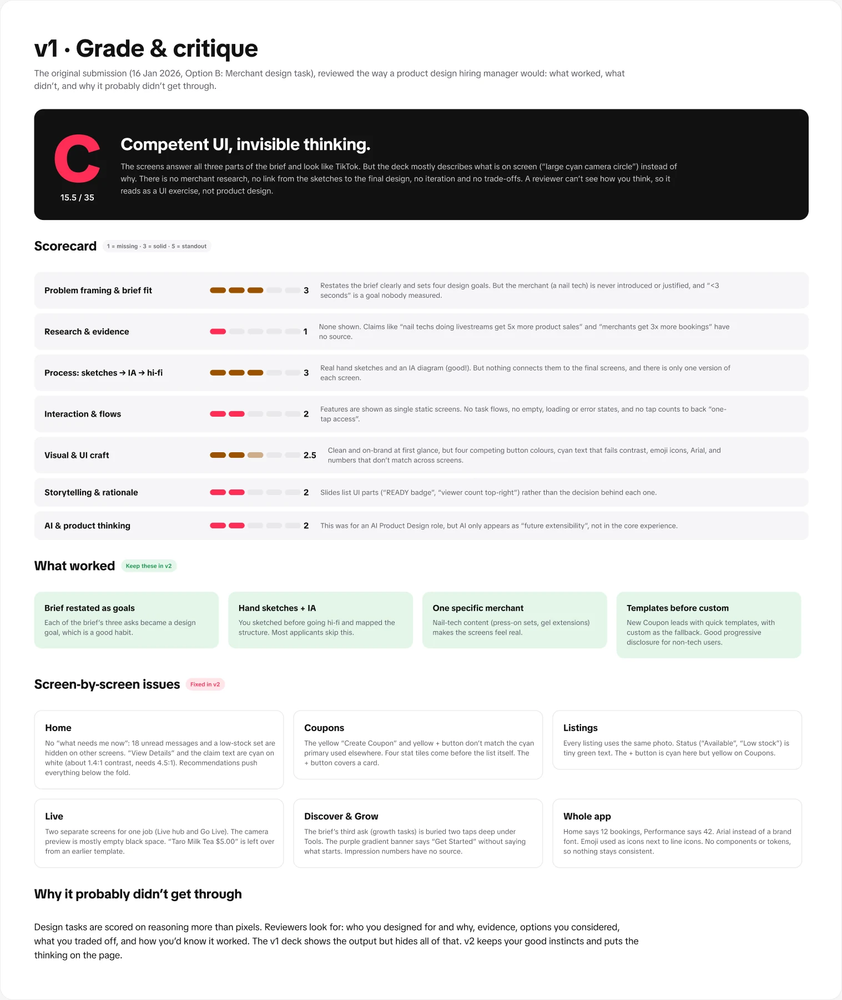
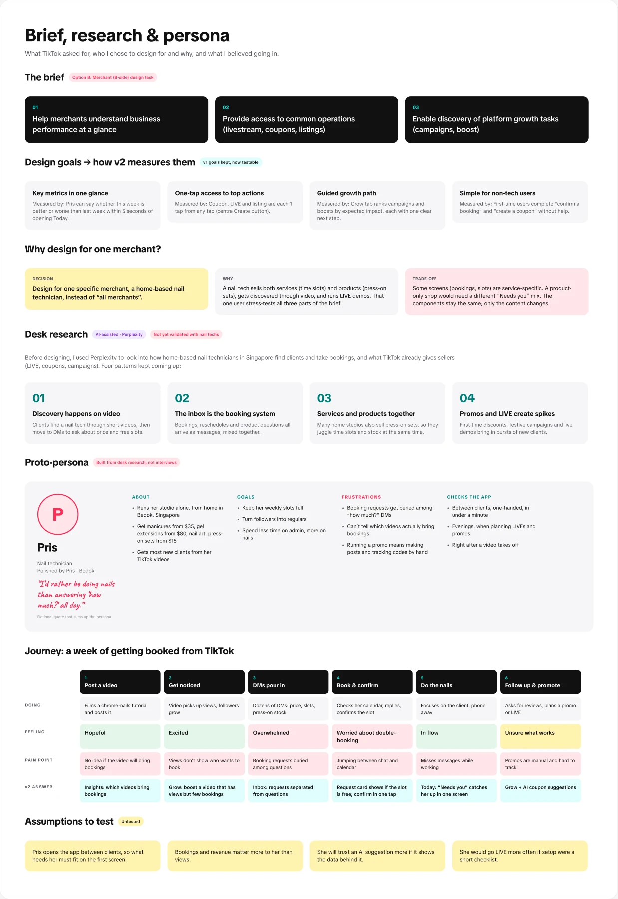
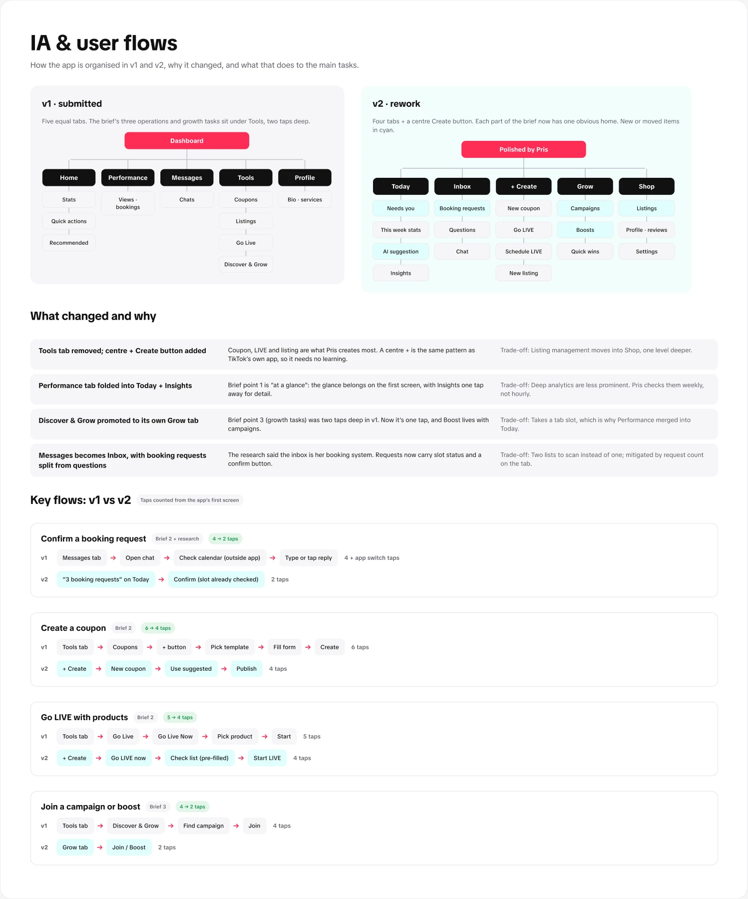
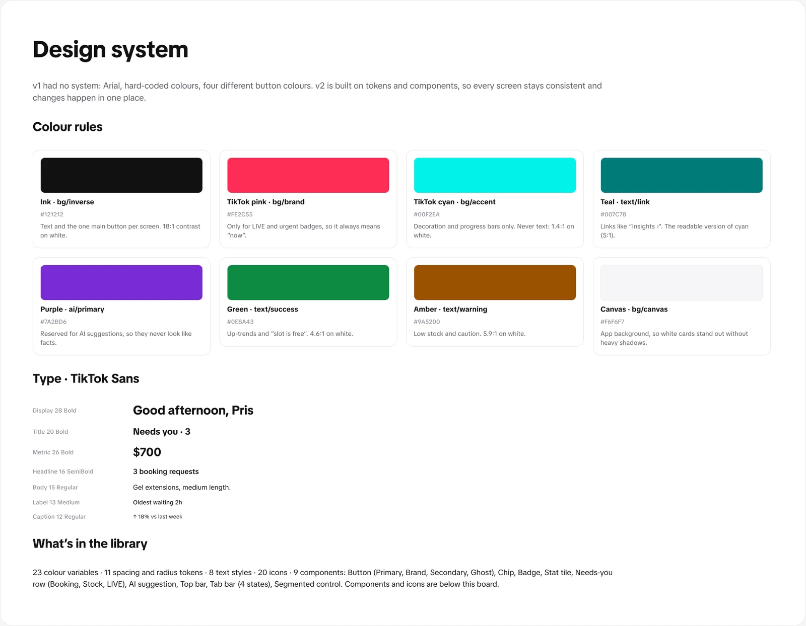
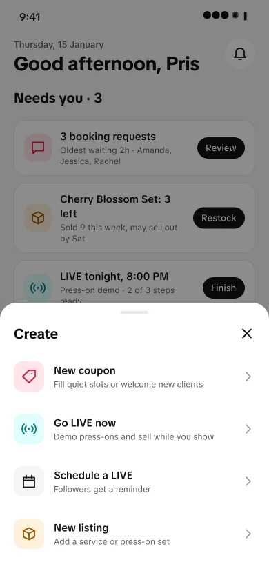
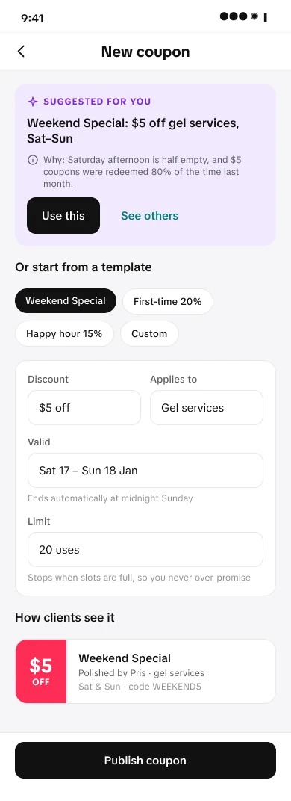
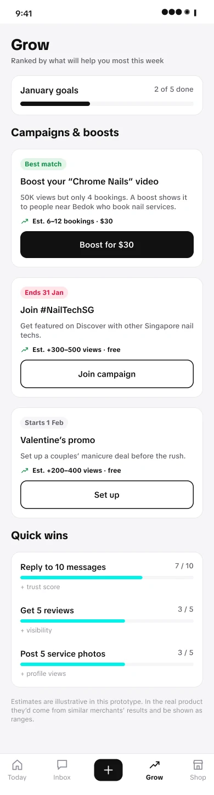
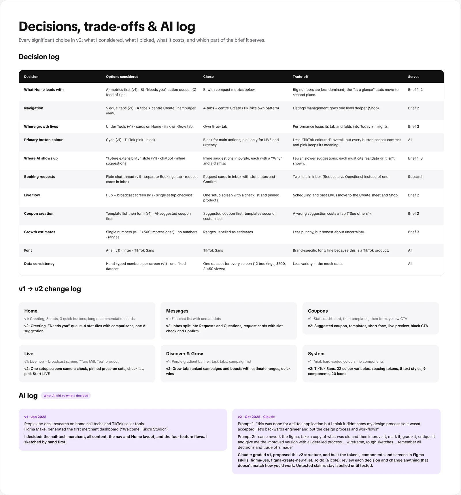
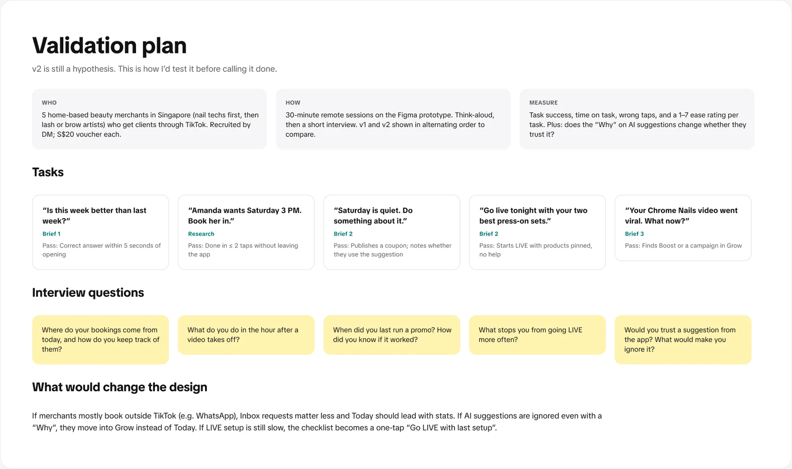

01 · The brief
Three asks, one merchant.
TikTok’s Option B design task asked for a merchant dashboard that does three things:
- Help merchants understand business performance at a glance.
- Give access to common operations: livestream, coupons, listings.
- Help merchants discover platform growth tasks like campaigns and boosts.
Instead of “all merchants”, I designed for one: Pris, a home-based nail technician in Bedok. She sells both services (time slots) and products (press-on sets), gets found through video and runs LIVE demos, so one user stress-tests all three parts of the brief.
02 · Grading v1
Competent UI, invisible thinking.
My January submission answered the brief and looked like TikTok, but it wasn’t accepted. I reviewed it the way a hiring manager would, with Claude acting as the critic, against seven criteria. It scored a C (15.5 / 35).
The pattern was clear: the deck described what was on screen instead of why. No merchant research, unsourced claims like “5× more product sales”, no link from my sketches to the final screens, four competing button colours, cyan text that failed contrast, and numbers that didn’t match between screens (12 bookings on one, 42 on another).

03 · Research & persona
Who Pris is, and what I believed going in.
I used Perplexity for desk research on how home-based nail techs in Singapore find clients and take bookings, and what TikTok already gives sellers. Four patterns kept coming up: discovery happens on video, the inbox is the booking system, services and products are sold together, and promos and LIVEs create spikes.
Honest status: Pris is a proto-persona built from desk research, not interviews. Her assumptions are labelled untested until I speak to real merchants.

04 · IA & flows
Every part of the brief gets an obvious home.
v1 had five equal tabs, with the brief’s operations and growth tasks buried two taps deep under Tools. v2 uses four tabs plus a centre Create button, the same pattern as TikTok’s own app, and gives growth its own tab.

05 · Design system
Rules for colour, so it always means something.
v1 had no system. v2 is built on 23 colour variables, spacing and radius tokens, 8 text styles in TikTok Sans, 20 icons and 9 components. The rules matter more than the swatches:
- Black for the one main button per screen (18:1 contrast).
- TikTok pink only for LIVE and urgent badges, so it always means “now”.
- TikTok cyan for decoration and progress bars only; it fails contrast as text.
- Purple is reserved for AI suggestions, so they never look like facts.

06 · v2 screens
Built only from the system.
Today leads with what needs Pris now, then this week’s numbers. Booking requests in Inbox show whether the slot is free, with a Confirm button. AI shows up inline, in purple, always with a “Why” and a way to dismiss it. Growth estimates are shown as ranges, because a single number would claim more certainty than we have.





07 · Decisions & AI log
What I considered, what I picked, what it cost.
Every significant choice is logged with the options I considered, the one I chose, its trade-off and which part of the brief it serves. The AI log separates what each tool did from what I decided.

08 · Validation plan
v2 is still a hypothesis.
Next I’ll run 30-minute remote sessions with 5 home-based beauty merchants who get clients through TikTok, with v1 and v2 shown in alternating order. Each task has a pass mark, like “Is this week better than last week?” answered within 5 seconds, or booking Amanda in within 2 taps.

09 · Trade-offs
The calls that shaped v2.
What should Today lead with?
A “Needs you” queue, then compact stats (chosen)
Pris opens the app between clients, so what needs her has to fit on the first screen. Cost: the big numbers are less dominant.
Metrics first (v1) (not chosen)
Answers “how am I doing?” but hides the booking that’s been waiting two hours.
What colour is the main button?
Black, with pink only for LIVE and urgency (chosen)
Every button passes contrast and pink keeps its meaning. Cost: the app looks less TikTok-coloured.
TikTok cyan (v1) (not chosen)
On-brand, but cyan text on white is about 1.4:1, far below the 4.5:1 needed.
Where does AI show up?
Inline suggestions with a “Why” (chosen)
Each one cites real data and can be dismissed. Cost: fewer suggestions, because ones without evidence aren’t shown.
A chatbot, or a “future” slide (v1) (not chosen)
A chatbot makes Pris ask the questions; a slide about the future isn’t a product.
What I kept from v1
- Restating the brief as goals, one specific merchant, and templates before custom coupons.
- Sketching by hand before going hi-fi.
What I’d still change
- It’s untested. The validation plan comes next, and the persona stays a proto-persona until then.
- The estimates in Grow are illustrative; in a real product they’d come from similar merchants’ results.